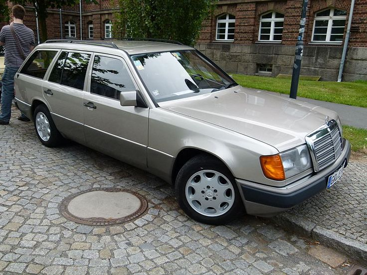

Mercedes-Benz E-Class 230 TE MT Base — это универсал премиум-класса, сочетающий комфорт, элегантность и надежность. Оснащенный 2.3-литровым бензиновым двигателем, этот автомобиль предлагает сбалансированную мощность и плавный ход. Механическая коробка передач обеспечивает более активное участие водителя в управлении, предлагая традиционный контроль над скоростью и динамикой автомобиля. Тип кузова: универсал (с увеличенным багажным отделением для грузов). Двигатель: 2.3-литровый бензиновый. Мощность: около 132 л.с. Коробка передач: механическая (MT). Привод: задний привод. Этот автомобиль подходит как для городских поездок, так и для длительных путешествий, благодаря просторному салону и универсальности кузова.